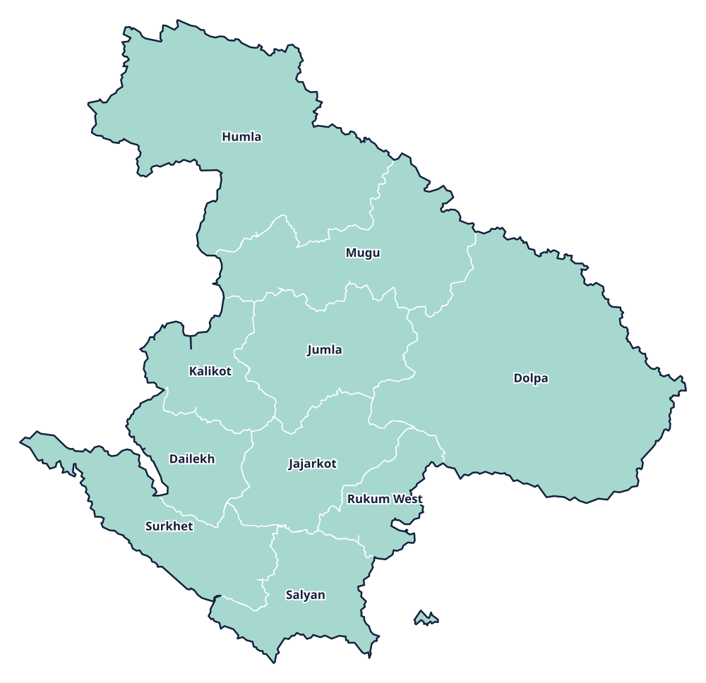

Province 6 · प्रदेश 6
Karnali Province
कर्णाली प्रदेश

Provincial information
Capital: Birendranagar (वीरेन्द्रनगर)
Districts: 10
District directory
Select a district to view its profile, find news coverage, and browse local links.
Province 6 · प्रदेश 6
कर्णाली प्रदेश

Capital: Birendranagar (वीरेन्द्रनगर)
Districts: 10
Select a district to view its profile, find news coverage, and browse local links.